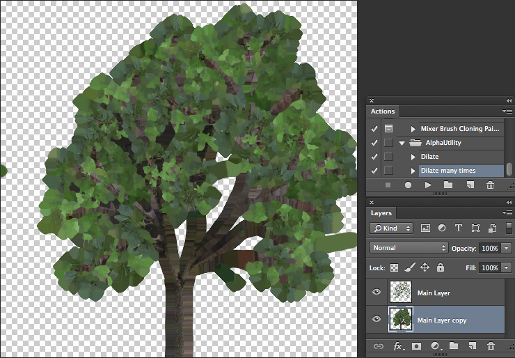

如何导入 Alpha 纹理？
Unity 使用直接的 Alpha 混合。因此，您需要扩展颜色层…Unity 中的 Alpha 通道将从 Photoshop 文件中的第一个 Alpha 通道读取出来。
设置
在此之前，安装以下 Alpha 实用程序 Photoshop 操作程序：AlphaUtility.atn.zip
安装后，操作面板 (Action Palette) 应该包含一个名为 AlphaUtility 的文件夹：

确保 Alpha 正确
假设您在 Photoshop 内的透明层上有 Alpha 纹理。类似以下纹理：
1.复制该层
1.选择最低层。此层将成为背景扩张的源。
1.选择 __Layer > Matting > Defringe__，并应用默认属性
1.多次运行“Dilate Many”操作。这样就会将背景扩展到新层中。
1.选择所有扩张层并用 Command-E 合并它们 
1.在图像栈的底部创建纯色层。此层的颜色与文档的一般颜色相匹配（在本示例中为绿色）。请注意，如果没有此层，Unity 将从所有层的合并透明度中获取 Alpha。
现在我们需要将透明度复制到 Alpha 层中。
1.通过在图层面板 (Layer Palette) 中按住 Command 键并将单击选定内容，将选定内容设置为主层的内容。 1.切换到通道面板。 1.从透明度创建新通道。

保存 PSD 文件；现在便准备好了。
额外信息
请注意，如果图像包含透明度（合并层之后），则 Unity 将从所有层的合并透明度中获取 Alpha，并将忽略 Alpha 遮罩。变通方法是创建一个纯色层，如“确保 Alpha 正确”部分的第 6 点所述